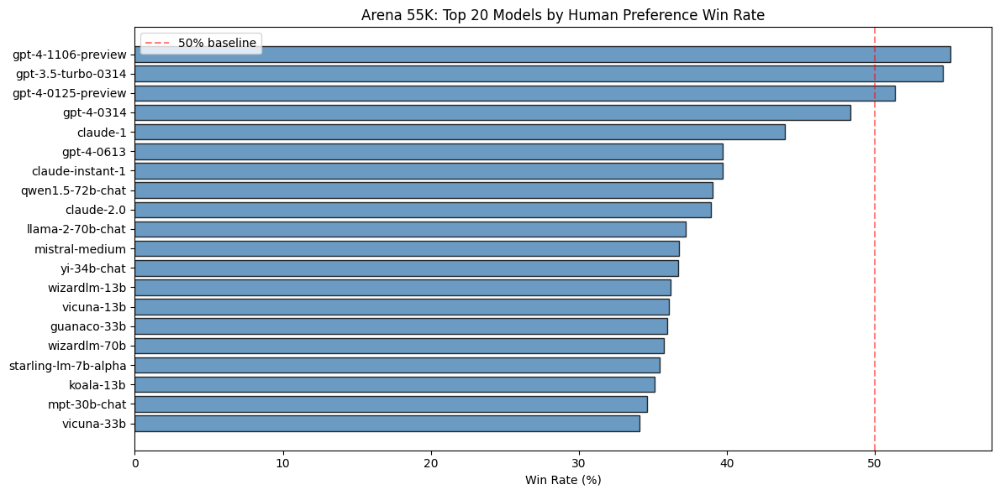
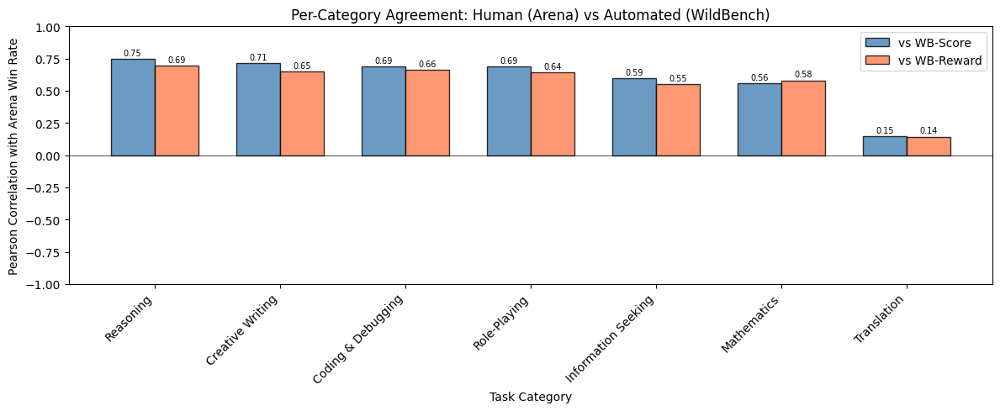
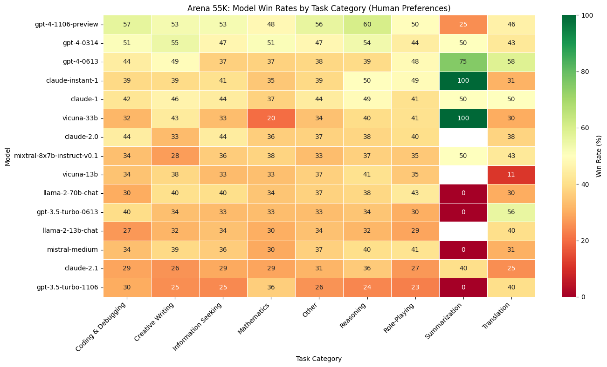

Can LLM Judgment Capture
Human Preference?
An Alignment Study Between Automated and Human
Evaluation of LLM Task Performance
Yifan Liu · 1007341681
Mechanical and Industrial Engineering · University of Toronto
MIE1512 · Prof. Mariano P. Consens
The Research Problem
Evaluating LLMs is expensive. Human evaluation (crowdsourced voting) is the gold standard — but slow, costly, and hard to scale. A popular alternative: use a strong LLM as a judge to score other LLMs automatically.
when evaluating LLM task performance?
Existing work reports high overall agreement (r ≥ 0.94). But is this agreement uniform across task types? Or does the LLM judge agree with humans on some tasks and fail on others?
Why This Matters
Replacing Human Evaluation
If LLM judges fail on certain task types, using them as a blanket replacement for human evaluation is unreliable.
Model Development
RLHF and DPO use automated scores as training signals. If the judge disagrees with humans on math or translation, models are optimized for the wrong objective.
Model Selection
Practitioners choose LLMs based on leaderboards. If the leaderboard doesn't match human preferences for their use case, they may pick the wrong model.
Method: LLM-as-Judge
Using a strong LLM to automatically evaluate other models
LLM-as-Judge: How It Works
WildBench (Lin et al., ICLR 2025 Spotlight) uses GPT-4-turbo to evaluate other models' outputs on 1,024 real-user tasks from WildChat:
- Input: A real-user prompt (from WildChat) + the target model's response
- Checklist generation: GPT-4-Turbo and Claude-3-Opus jointly generate a task-specific checklist of 5–10 verifiable questions tailored to the prompt (e.g., "Does the code handle edge cases?")
- Evaluation: The judge evaluates the response against the checklist using Chain-of-Thought reasoning, producing a structured analysis of strengths and weaknesses before arriving at a final judgment
Two Metrics: WB-Score and WB-Reward
WB-Score (Pointwise)
Judge rates one response on a 1–10 scale against the checklist:
- 1–2: Makes no sense at all
- 3–4: Poor, doesn't help user
- 5–6: Fair but has issues (errors, hallucinations)
- 7–8: Good but could improve
- 9–10: Perfect, fully solves the problem
Rescaled: S' = (S − 5) × 2 · Cost: ~$5, 10 min/model
Achieves r = 0.955 with Arena Elo (top models)
WB-Reward (Pairwise)
Judge compares test model vs. a baseline using the checklist:
- Much better: +1
- Slightly better: +0.5
- Tie: 0
- Slightly worse: −0.5
- Much worse: −1
3 baselines averaged: GPT-4-Turbo, Claude-3-Haiku, Llama-2-70B-chat
Length penalty: if winner >K chars longer, slight win → tie (K=500)
Achieves r = 0.984 with Arena Elo (top models)
Checklist Example
Example Prompt (G20 Essay Task)
"Write an essay on the impact of the G20 summit on the global economy... it has to have more than 1200 words. Write it beautiful and poetic. Use extensive vocabulary... Use some ancient Indian historical references."
Generated Checklist (5–10 questions per task):
- Does the essay contain more than 1200 words as requested?
- Is the language beautiful and poetic, with extensive vocabulary?
- Does it include factual data on the G20's economic impact?
- Are there references to young people shaping the world?
- Does it include ancient Indian historical references?
- Is the essay structured in a clear and logical manner?
The judge evaluates every model's response against these same questions, ensuring consistent, interpretable, and comparable scoring. Checklists are generated once per task and reused for all models.
Dataset: Chatbot Arena
The largest open human preference dataset for LLM evaluation
Chatbot Arena: Human Preference at Scale
Chiang et al., ICML 2024
- A user submits a prompt and sees responses from two anonymous LLMs side by side
- The user votes for the response they prefer
- 57,477 pairwise battles with full text, across 64 models
- Supplemented by 1.7M voting records
- Rankings via Bradley-Terry model → Elo ratings (same concept as chess)
Widely considered the gold standard for alignment evaluation. This is our ground truth: what do humans actually prefer?

Results
What we found when comparing LLM judgment with human preference
Result 1: Overall — The LLM Judge Agrees
| Comparison | Pearson | Spearman |
|---|---|---|
| Elo vs WB-Score | 0.954 | 0.923 |
| Elo vs WB-Reward | 0.943 | 0.895 |
High overall agreement (p < 10-5). But this is partly driven by large inter-model gaps — every benchmark can tell GPT-4 from Llama-2. The real test is per category…

Result 2: Per Category — Agreement Varies Dramatically
| Task Category | N | vs WB-Score | vs WB-Reward |
|---|---|---|---|
| Reasoning | 11 | 0.749 | 0.693 |
| Creative Writing | 11 | 0.713 | 0.649 |
| Coding & Debugging | 12 | 0.689 | 0.661 |
| Role-Playing | 11 | 0.689 | 0.642 |
| Info Seeking | 12 | 0.595 | 0.554 |
| Mathematics | 11 | 0.558 | 0.581 |
| Translation | 5 | 0.146 | 0.144 |
| Overall | 12 | 0.954 | 0.943 |

Result 3: Rankings Shift Across Categories

The overall #1 model (gpt-4-1106-preview) is not #1 in most categories. Performance varies substantially by task type.
Category-Specific Leaders
| Task Category | Top Model (human votes) | Win Rate |
|---|---|---|
| Coding & Debugging | gpt-3.5-turbo-0314 | 61.2% |
| Creative Writing | gpt-3.5-turbo-0314 | 61.7% |
| Information Seeking | gpt-3.5-turbo-0314 | 60.0% |
| Reasoning | gpt-4-1106-preview | 60.2% |
| Mathematics | gpt-3.5-turbo-0314 | 75.0% |
| Role-Playing | mpt-30b-chat | 70.0% |
| Translation | gpt-4-0613 | 58.3% |
Summary
1. Overall: Yes
LLM judge scores correlate strongly with human Elo (r = 0.95), driven by large inter-model gaps.
2. Per Category: It Varies
Agreement ranges from r = 0.75 (reasoning) to r = 0.15 (translation). The LLM judge is reliable for some tasks but not others.
3. Rankings Shift
The best overall model is not the best in most categories. Aggregate scores hide task-specific strengths.
Ongoing Work
✓ Completed
- Arena 57.5K: task categorization, per-category win rates
- Elo ratings via Bradley-Terry model
- Cross-benchmark correlation — overall and per category
- 7 visualizations (heatmaps, scatter plots, bar charts)
In Progress
- Per-category Elo (fairer than raw win rate)
- 1.7M Arena voting records for robust estimates
- AlpacaEval 2 integration for three-way comparison
- Bootstrap confidence intervals
- Improved categorization coverage (40% → target 70%+)
- Full PySpark pipeline at scale
Thank You
Questions?
Chiang et al., "Chatbot Arena," ICML 2024
Dubois et al., "AlpacaEval 2," COLM 2024